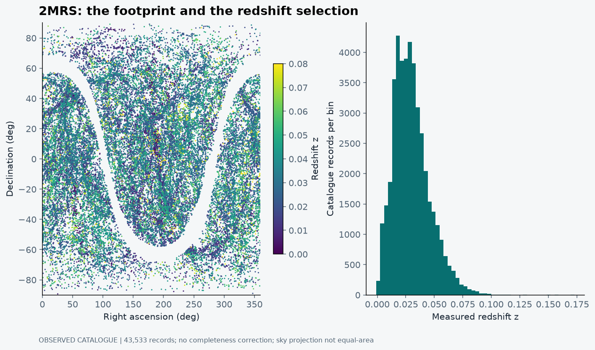
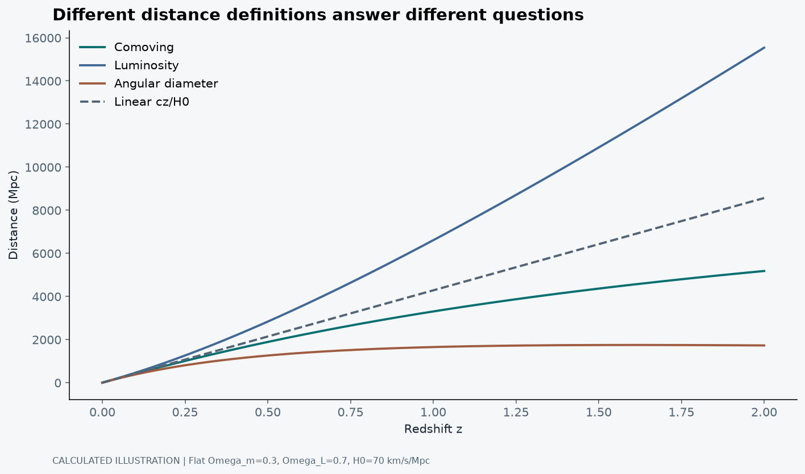

The empty patch might be our fault
A three-dimensional galaxy map is difficult not to enjoy. Rotate it slightly and filaments emerge. Rotate it again and a void seems to open in front of you. For a moment, the Universe looks like something we have finally managed to put on a desk.
Then comes the less cinematic question: did we actually observe that empty patch?
That question sits near the centre of NĀSADĪYA LIGHTCONE. I wanted a browser that could make measured galaxy catalogues navigable without disguising the survey as a complete reconstruction. A point should have a source. A missing region should not quietly become a cosmological discovery. The camera can move freely; the evidence cannot (Jana, 2026).
A galaxy catalogue is an observing history
The nearby layer comes from the 2MASS Redshift Survey. Huchra et al. (2012) describe the target selection, redshift measurements and sky coverage. Near-infrared selection helps in particular ways, but it does not make the catalogue immune to foreground obscuration or a flux limit.
The deeper project layer uses DESI DR1 large-scale-structure products. DESI provides a much larger spectroscopic survey with multiple target populations and a very different observational reach (DESI Collaboration, 2025). Combining their displays is useful for comparison. It does not create a uniform census simply because the points now share a canvas.
The explorer contains 43,533 2MRS rows and a 125,000-row DESI browser overview drawn from a much larger accepted catalogue. These counts describe the explorer's data layers, not the full survey-release totals in the papers (Jana, 2026).
Two angles, one redshift, several assumptions
A sky position gives two directions. A spectrum supplies a redshift, usually written z = (λ_observed - λ_rest)/λ_rest. To turn that into a radial coordinate, we need a distance convention and a cosmological model. At very small redshift, cz/H₀ is a useful scale, but it is not an exact universal distance rule.
For nearby objects, peculiar velocities can be a substantial part of the measured recession velocity. Some nearby galaxies have negative heliocentric recession velocities. They have not acquired negative physical distances. This is one reason the plot below stays in sky position and redshift rather than presenting every nearby radial coordinate as a flow-corrected measurement.
At larger redshift, comoving distance, luminosity distance, angular-diameter distance and lookback time are different quantities. A user interface that changes between them should say which one is shown. Calling all four “distance” makes the controls pleasantly short and the interpretation unnecessarily difficult.

The first panel is a record of where these catalogue objects lie on the sky. The second is a record of their redshifts in this selected sample. A fall in counts towards larger redshift does not, by itself, mean the Universe runs out of galaxies. Fainter galaxies become harder to include in a flux-limited catalogue, while the volume and population sampled also change.
The gaps need similar care. Some reflect survey coverage or foreground limitations. Real underdensities also exist, but the plotting code cannot decide which explanation applies just by noticing that fewer points were drawn there.
A browser sample is not a statistical sample by default
Rendering millions of objects has a cost. The project therefore has a bounded browser overview and a separate research workflow. That is an engineering choice, not a claim that the overview reproduces every statistic of the full catalogue.
A deterministic level-of-detail selection is useful because the same input produces the same display. Reproducibility does not automatically make it representative. A density estimate, clustering measurement or uncertainty calculation must use an appropriate catalogue and selection model, not whichever points happen to fit comfortably on the graphics card.
The project also keeps survey layers identifiable. An available-survey stack is not necessarily deduplicated. If one object appears in two surveys, counting both rows as two unique galaxies would create a small piece of the Universe in JavaScript. I would rather not claim that as a feature.
What a lightcone does and does not mean
Looking farther away generally means observing earlier emitted light. A broad redshift map therefore does not show every galaxy at one common cosmic time. The word lightcone is useful because it reminds us that the observational geometry includes time as well as position.
But a redshift playback slider is not a recording of individual galaxies evolving. It changes which observed slice we inspect. It does not follow the same galaxy through billions of years, and it does not turn observations at different redshifts into a direct movie of structure growth.
This matters when visualisations become persuasive. A point cloud can suggest continuous structures between sparsely sampled regions. Smooth colouring and camera motion can make those suggestions feel measured. Unless a reconstruction is explicitly computed and labelled, the gaps should remain gaps.
Redshift does not specify one universal distance
For a spatially flat matter-plus-cosmological-constant example, the comoving radial distance is D_C(z) = (c/H₀) ∫₀ᶻ dz′/E(z′), with E(z) = √[Ω_m(1 + z)³ + Ω_Λ]. The integral is dimensionless and c/H₀ supplies the distance scale. This is a cosmological inference from redshift, not a second distance measurement for each galaxy.
The nearby approximation D ≈ cz/H₀ replaces E(z) by one. That works only over an appropriate low-redshift range. In an illustrative model with H₀ = 70 km/s/Mpc, Ω_m = 0.3 and Ω_Λ = 0.7, the approximation gives about 429 Mpc at z = 0.1, compared with an integrated comoving distance of about 418 Mpc. At z = 1, the values are about 4,283 and 3,304 Mpc. The error is no longer a small plotting detail.

In that flat model, luminosity distance is D_L = (1 + z)D_C and angular-diameter distance is D_A = D_C/(1 + z). The first is useful for relating luminosity to measured flux; the second relates an object's physical transverse size to an angular size. A galaxy has not moved when we switch definitions. We have changed which relationship the radial scale represents.
Lookback time uses a different integral, with an additional factor 1/(1 + z). It measures elapsed cosmic time between emission and observation under the model. Multiplying a comoving distance by a light-travel conversion is not generally equivalent. This is why an interface should name the coordinate rather than rely on the reassuring word “distance”.
Nearby galaxies are a special warning
At low redshift, the observed recession signal includes peculiar motion as well as expansion. Schematically, cz_obs ≈ H₀d + v_pec along the line of sight, after specifying a reference frame. A 300 km/s peculiar velocity is a substantial thirty per cent of a 1,000 km/s recession signal. It is a much smaller fraction of 30,000 km/s.
This does not provide a universal peculiar-velocity correction. It explains why the nearest objects can have surprisingly uncertain redshift-based radial positions, and why a negative nearby redshift cannot be assigned a negative physical distance. Direction, reference frame, group environment and independent distance information all matter.
In the existing 2MRS browser derivative, nearby cosmological radial positions are explicitly not flow-corrected. A figure intended for scientific use should carry that limitation forward. Recentring the camera on a nearby group changes the view, but not the radial-distance information available for its members.
Why the radial histogram rises and then falls
A rough nearby-space count model is dN/dr ∝ Ω_survey r² n̄ φ(r), where Ω_survey is the covered solid angle, n̄ is a mean number density and φ(r) is a radial selection probability. The r² factor comes from the growing volume of a shell. The selection probability typically falls when increasingly faint objects drop below a survey's flux limit.
The observed histogram combines both effects, along with real clustering and other selection details. Dividing counts only by shell volume does not fully solve the problem if φ(r) remains unknown. Nor can one compare the height of a 2MRS bin with a DESI bin and infer evolution without matching the tracer selections and observing volumes.
The measured population changes too. Bright nearby galaxies, luminous red galaxies, emission-line galaxies and quasars are not interchangeable samples of the same objects. DESI's targeting and redshift-success criteria are part of how its observed redshift distributions arise (DESI Collaboration, 2025). An all-tracer picture is useful for orientation; a quantitative density comparison needs a more specific denominator.
What a random catalogue is doing there
The word random can sound like the opposite of scientific care. In survey analysis, a random catalogue can be exactly what we need: unclustered positions drawn through the same angular mask and radial selection as the data. It supplies a comparison that contains the observing geometry without the galaxies' clustering signal.
The Landy-Szalay two-point estimator is commonly written ξ = (DD - 2DR + RR)/RR, where the pair counts are appropriately normalised for the numbers of data and random objects. The normalisation matters. Raw DD, DR and RR counts are not interchangeable when the random catalogue is much larger (Landy and Szalay, 1993).
If an apparent feature also appears when an unclustered catalogue is passed through the same mask, the footprint is a plausible explanation. That is a stronger test than rotating a point cloud until a pattern looks convincing. A real clustering estimate also needs uncertainty treatment, survey weights and a scale range appropriate to the analysis.
The browser currently does not compute this estimator. Explaining the next statistical step should not imply that it is already running behind the visualisation. The map and a clustering pipeline are connected, but they are different products.
A rendered point does not have a physical size
Point size, opacity and depth blending change how dense a cloud appears. A large bright sprite can make a sparse region look connected. A distant object may be drawn large enough to see even when its actual angular size is tiny. Those are reasonable rendering decisions if the reader understands that the glyph is not the galaxy's measured physical extent.
Likewise, level-of-detail selection can alter the apparent contrast of structures. The 125,000-row DESI overview contains measured rows, but its display density is not a calibrated mass-density field. A smoothing kernel or density reconstruction would introduce additional assumptions and should be shown as a separate derived layer, not quietly blended with the catalogue points.
To inspect a candidate structure, I would compare slices and tracer selections, verify source coordinates, inspect redshift-quality information and check the footprint. To measure its statistical significance, I would leave the display-only sample and use the appropriate full research catalogue and comparison model. The visualisation is where a question can begin; it is not where every question has already been answered.
The next question should be harder than rotating the map
Once the reader understands the footprint, useful questions follow. Which tracer population is selected at this redshift? Does a structure persist in a different projection? Which weights and random catalogues would be needed before estimating clustering? How sensitive is an apparent feature to a redshift-quality cut?
Those questions are a better reason to build an interactive map than movement alone. They also create a boundary between the public explorer and the research mode. The explorer helps orientation and source inspection. Quantitative inference needs its own documented catalogue handling, masks, selection corrections and uncertainty model.
I want the cosmic web to look compelling because it is compelling. But the most important control in the interface may be the one that tells us what we did not observe. A beautiful map is an invitation to ask questions, not an exemption from them.
References
DESI Collaboration (2025) ‘Data Release 1 of the Dark Energy Spectroscopic Instrument’, arXiv, arXiv:2503.14745 [Preprint]. Available at: https://arxiv.org/abs/2503.14745.
Huchra, J.P. et al. (2012) ‘The 2MASS Redshift Survey: Description and data release’, The Astrophysical Journal Supplement Series, 199, 26. Available at: https://doi.org/10.1088/0067-0049/199/2/26.
Jana, B. (2026) NĀSADĪYA LIGHTCONE [Software and catalogue derivatives]. Available at: NASADIYA-LIGHTCONE (Accessed: 21 October 2026).
Landy, S.D. and Szalay, A.S. (1993) ‘Bias and variance of angular correlation functions’, The Astrophysical Journal, 412, pp. 64-71. Available at: https://doi.org/10.1086/172900.